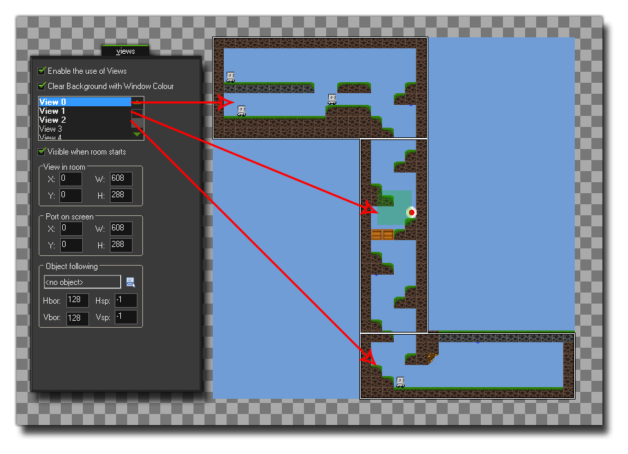

surface_create_ext
创建一个表面图层，链接到HTML的画布元素上。Creates a surface and links it to an HTML5 canvas element.
Syntax 用法:
surface_create_ext(name, w, h);
| Argument | Description |
|---|---|
| name | 所链接的画布元素名称。The name of the canvas element to link the surface to. |
| w | 创建的表面图层宽度。The width of the surface to be created. |
| h | 创建的表现图层高度。The height of the surface to be created. |
Returns 返回: Real 实数
Description 描述
注意 : 这个函数只适用于HTML5模块！
NOTE : This function is only available for use with the HTML5 module!
这个函数允许你为已经存在网页上的画布元素附著一个表面图层，意味着可以有效的分割游戏的部分页面，绘制到页面内的不同地方。为此，你必须准确的定义*.html游戏页面的画布元素，使用正确的大小和名称，以符合想要创建的表面。所以，你会有一个主画布，然后是画布元素的表面一层，通过这个函数指定到正确的表面图层。下面的示图展示了怎样设置一个有三个画布元素的页面。
This function allows you to attach a surface to a canvas element that already exists in your web page, meaning that you can effectively split up portions of your game to be drawn at various different places within the page. To that end, you must have defined the canvas element correctly within the *.html page of your game using the correct sizes and names that correspond to the surfaces you wish to create. So, you would have your "main" canvas, and then your secondary surface canvas elements, which will be assigned using this function to the correct surfaces. The following image is an example of how a page with three canvas elements would be set up:

页面布局可能会比较棘手，特别是希望正确的排列元素的时候，一旦创建布局这个艰巨的任务已经完成，你便可以使用游戏全局设定（Global Game Settings）的HTML5 Tab添加这个html文件作为默认页面。接下来应该做的是设置房间和视野，因为每个表现图层都需要关联一个特定的视野以捕捉游戏画面（查看视野变量view_surface_id[0...7]）。下面的图片展示的是如何为上面的画布例子设置游戏房间的参数。
The page layout can be tricky, especially if you wish all the elements to line up correctly, but once the the hard task of creating the layout has been completed, you can then add this html file as the default page file for the game using the HTML5 Tab of the Global Game Settings. The next thing you should do is set up your room and views, as each surface will need to be associated with a specific view to "capture" the game images (see the view variable view_surface_id[0...7]). The image below shows how the game room for the above canvas example would be set out:

最后，你可以再使用这个函数来创建表面图层，名称和画布元素使用的相同，大小符合同一个画布的尺寸。这个函数将返回表面的索引名称，并储存在一个变量上，方便将来函数调用。当这个表面首次被创建的时候，它可能会包含“噪音”，因为基本上它只是一个为特别的目的而搁置的内存区域（这个内存可能仍然包含信息），所以在使用前需要用 draw_clear_alpha 这个函数清理这个表面。
Finally you would then use this function to create the surfaces, with the name being the same as that used for the canvas elements and the size corresponding to the size of that same canvas. The function will return the index of the surface which should be stored in a variable for future function calls. When the surface is first created, it may contain "noise" as basically it is just an area of memory that is put aside for the purppose (and that memory may still contain information), so you may want to clear the surface before use with a function like draw_clear_alpha.
Example 例子:
s1 = surface_create_ext("surface1", 192, 550);
s2 = surface_create_ext("surface2", 608, 186);
view_surface_id[1] = s1;
view_surface_id[2] = s2;
上述代码创建了两个不同大小的表面，并给他们每个都指定了不同的画布元素，然后为了在房间里捕捉正确的部分，给这两个表面层指定了两个视野，
The above code creates two surfaces of different sizes, assigning each one to a different canvas element, and then those surfaces are assigned to two views so that the correct part of the room is captured.